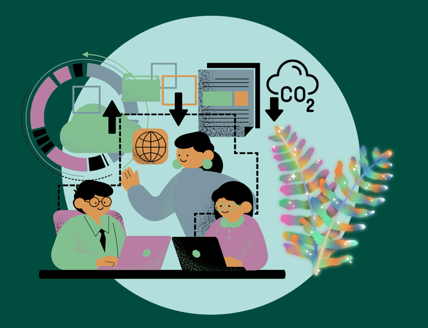

<div class="start-screen">
    <div>
        <h2>{{"START_SCREEN.WELCOME" | translate}}</h2>
        <p>{{"START_SCREEN.INTRO" | translate}}</p>
        <p innerHTML="{{'START_SCREEN.INTRO_2' | translate}}"></p>


        <div class="button-row">
            <button mat-raised-button (click)="scrollDown()" routerLink="/create">
                <mat-icon aria-hidden="false" fontIcon="east"></mat-icon>
                {{"BUTTON.GET_STARTED" | translate}}
            </button>
            <button class="secondary-button" mat-button (click)="scrollDown()" routerLink="/visualize">
                <mat-icon aria-hidden="false" fontIcon="bubble_chart"></mat-icon>
                {{"BUTTON.CREATE_VISUALIZATION" | translate}}
            </button>
        </div>
    </div>
    
</div>
